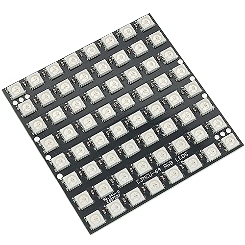
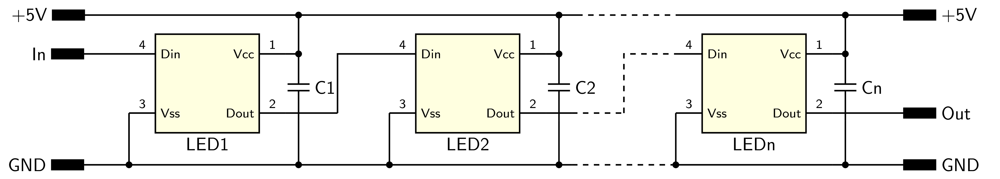
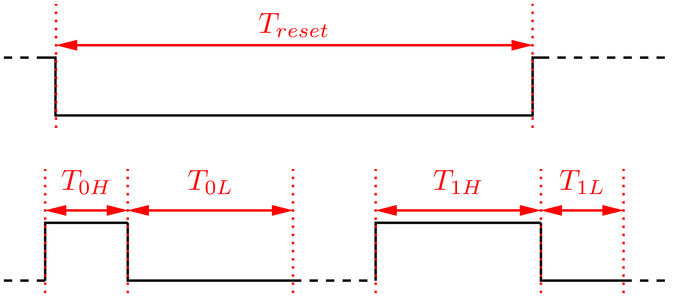
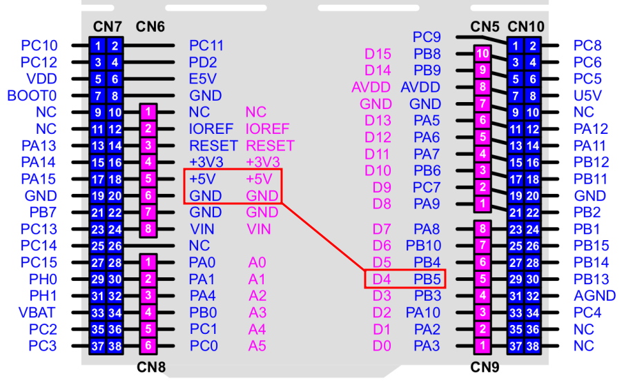
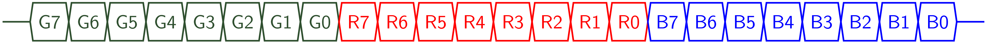

LED modul WS2812 #
Popis #
Modul obsahuje 64 farebných LED usporiadaných do matice v sériovom zapojení. Každá LED obsahuje obvod WS2812, informácia o intenzite svetla farby každej LED na module sa riadi prostredníctvom dátového paketu, v ktorom sú usporiadané trojice 8-bitových dát (GRB). Pri príjme paketu dáta prechádzajú postupne LED diódami, pričom každá LED dióda prvú trojicu prijatých dát použíje na nastavenie farebných zložiek a zbytok paketu odošle nasledujúcej LED dióde. Moduly je možné zapájať za sebou v sérii, modul obsahuje dva konektory, jeden pre pripojenie napájania a vstupu dát, druhý pre propojenie nasledujúceho modulu.


Obr. 41 LED modul WS2812-64.#
Zapojenie #
Pripojenie modulu k mikrokontroléru je pomocou troch vodičov, napájanie +5V, zem a dátový vodič.


Obr. 42 Sériové zapojenie v LED module.#
Komunikácia s obvodmi WS2812 je sériová, po jednovodičovej zbernici, s pevným časovaním stavov L a H, tieto sa odlišujú dĺžkou impulzu na zbernici. Jednotlivé pakety sú oddelené časovým intervalom reprezentujúcim reset zbernice.


Obr. 43 Časovanie logických stavov L,H a RESET.#
Interval |
Min |
Max |
|---|---|---|
\(T_{reset}\) |
\(300 \mu s\) |
\(\infty\) |
\(T_{0H}\) |
\(220 ns\) |
\(380 n s\) |
\(T_{0L}\) |
\(750 ns\) |
\(1.6 \mu s\) |
\(T_{1H}\) |
\(750 ns\) |
\(1.6 \mu s\) |
\(T_{1L}\) |
\(220 ns\) |
\(420 n s\) |
Pre komunikáciu mikrokontroléra s modulom môžeme použiť niekoľko metód, najjednoduchšou je priame generovanie dát časovaním pinu mikrokontroléra. Elegantnejšou metódou je je použitie rozhranie SPI, pre prenos dát do modulu je použitý len signál MOSI, správne časovanie zbernice dosiahneme nastavením frekvencie hodín rozhrania.


Obr. 44 Pripojenie modulu k Nucleo-64 cez rozhranie SPI1.#
Programovanie #
Každá farba LED je určená 8-bitovou hodnotou, pre 3 farby (RGB) potrebujeme preto vyslať pre každú LED postupnosť 24 bitov.


Obr. 45 Kódovanie farebnej informácie.#
LED sú zpojené v sérii, každý riadiaci obvod si z dátového reťazca ponechá 24 bite o stave LED a zbytok reťazca prepošle k nasledujúcej LED. Informácie o stave LED sú za sebou bez medzier, po ukončení vysielania je medzi jednotlivými reťazcami časový interval dlhší ako \(300 \mu s\), ktorý je interpretovaný ako reset komunikácie.

Obr. 46 Princíp komunikácie na sériovej zbernici.#
Knižnica #
Pre riadenie matice LED je určená knižnica lib_ws2812.py. Hodnoty farieb su kódované do bitovej postupnosti, ktorá je pomocou SPI rozhrania vyslaná do matice.
Kódovanie hodnôt bitová postupnosti je pomocou dátového registra SPI rozhrania pri bitovej rýchlosti 4Mbit/sec, ktorá zabezpečuje správne časovanie na dátovej zbernici:
hodnota 0 - postupnosť bitov 1000, doba trvania stavu H - 250 nsec, L - 750 nsec
hodnota 1 - postupnosť bitov 1110, doba trvania stavu H - 750 nsec, L - 250 nsec
Na vyslanie 8 bitov pre jednu farbu LED potom potrebujeme vyslať 4 Byte v SPI rozhraní, pre nastavenie stavu jednej LED potrebujeme 12 Byte ktoré obsahujú časovanie binárnych hodnôt:
g7g6 g5g4 g3g2 g1g0 r7r6 r5r4 r3r2 r1r0 b7b6 b5b4 b3b2 b1b0
Prevod medzi hodnotou byte a jeho časovaním uskutočníme pomocou jednoduchého algoritmu
# green - hodnota farebnej zlozky v RGB
# intensity - celkova intenzita svetla LED diody
buf_bytes = (0x88, 0x8e, 0xe8, 0xee) # dvojice stavov 00,01,10,11
mask = 0x03 # maska 00000011
green = int(green * intensity) # hodnota pre LED, 8bit
# priradenie dvojic do pola data[] (4 Byte) pre vyslanie v SPI
data[index ] = buf_bytes[green >> 6 & mask]
data[index+1] = buf_bytes[green >> 4 & mask]
data[index+2] = buf_bytes[green >> 2 & mask]
data[index+3] = buf_bytes[green & mask ]
Doba prenosu dát pre jednu LED je (4 Byte po 8 bitov a 3 farby)
a pre celú maticu 64 LED diód je potom doba trvania celého paketu
API #
Knižnica pre riadenie LED matice je implementovaná v triede WS2812:
Konštruktor:
WS2812(spi_bus, led_count, intensity)
spi_bus - SPI rozhranie
led_count - počet LED modulu
intensity - jas modulu 0..1
Metódy:
show(data)
data - pole hodnôt GRB pre LED v tvare
[(g1,r1,b1), (g2,r2,b2), ... ]
Príklady #
Príklad 1. Riadenie farieb LED matice
Inicializácia rozhrania a dáta pre rozsvietenie LED matice
from lib_ws2812 import *
matrix = WS2812(spi_bus=1, led_count=64)
data = [
(24, 0, 24), ( 0, 24, 0), ( 0, 0, 24), (12, 12, 0),
(0, 12, 12), (12, 0, 12), (24, 0, 0), (21, 3, 0),
(18, 6, 0), (15, 9, 0), (12, 12, 0), ( 9, 15, 0),
(6, 18, 0), ( 3, 21, 0), ( 0, 24, 0), ( 8, 8, 8)
]
matrix.show(data) # rozsvieti 16 LED
data=data*4
matrix.show(data) # rozsvieti 64 LED
Opakovaná inicializácia knižnice zhasne LED.
Príklad 2. Náhodné farby
import math
from lib_ws2812 import *
matrix = WS2812(spi_bus=1, led_count=64)
def data_generator(led_count):
data = [(0, 0, 0) for i in range(led_count)]
step = 0
while True:
red = int((1 + math.sin(step * 0.1324)) * 127)
green = int((1 + math.sin(step * 0.1654)) * 127)
blue = int((1 + math.sin(step * 0.1)) * 127)
data[step % led_count] = (red, green, blue)
yield data
step += 1
for data in data_generator(matrix.led_count):
matrix.show(data)
pyb.delay(10)
Príklad 3. Demonštračný program
Demonštrácia vlastností LED matice je v súbore demo_ws2812.py.
import math
from lib_ws2812 import *
from demo_ws2812 import *
matrix = WS2812(spi_bus=1, led_count=64, intensity=0.05)
while(True):
anim_1 = animation_1(matrix.led_count)
for i in range(240):
matrix.show(next(anim_1))
anim_2 = animation_2(matrix.led_count)
for i in range(240):
matrix.show(next(anim_2))
anim_3 = animation_3(matrix.led_count)
for i in range(240):
matrix.show(next(anim_3))